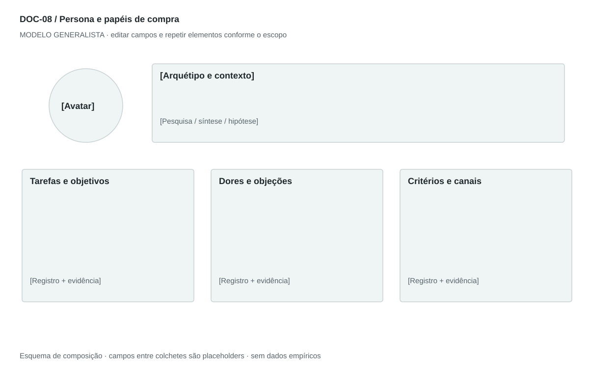

DOC-08 / Biblioteca documental generalista
Persona e papéis de compra
Representar um padrão de necessidades e decisões relevante para a oferta, com evidência e limites.
Modelo de investigação. Não representa uma análise concluída. Campos vazios devem permanecer identificados; não inventar dados para completar figuras.
Estrutura editorial
Ficha visual de uma página + 1–2 páginas analíticas. Priorizar comportamento, contexto, critérios e barreiras; demografia só quando explica uma decisão.
Visual previsto

Cabeçalho com arquétipo e base de evidência; cartão de contexto, tarefas, dores, critérios e canais. Retrato não ocupa mais espaço que as informações decisórias.
Imagens: Avatar abstrato original por padrão. Fotografia apenas licenciada e marcada como ilustrativa; não usar rosto como prova de entrevista. Sem idade, renda ou gênero decorativos.
Dicionário de dados
| Campo | Tipo | Dado necessário |
|---|
| persona_id | referencia | Identificador compartilhado pelos documentos |
| arquetipo | texto | Padrão de necessidade e comportamento |
| base_perfil | enum | pesquisa, sintese ou hipotese |
| contexto | texto | Situação de uso relevante |
| tarefa | texto | Resultado buscado |
| criterio_decisao | texto | O que determina escolha ou rejeição |
| alternativa_atual | texto | Como resolve hoje |
| objecao | texto | Barreira verificável de adoção |
| papel_compra | texto | Participação na decisão de contratação |
| canal | texto | Canal demonstrado ou hipótese a investigar |
| anti_persona | texto | Perfil que não se beneficia ou não pode ser atendido |
Todos os registros precisam de classificação, fonte, localização, datas, confiança e limitação. Números também precisam de unidade, moeda quando aplicável e período.
Modelo preenchível
Os quadros amarelos podem ser editados nesta página para impressão. Edições não são gravadas automaticamente: use o Markdown/JSON para manter uma versão ou imprima em PDF após editar.
[Negócio] · [Versão] · [Data-base] · [Autor] · [Audiência] · [Território]
Pergunta decisória: [A preencher]
Escopo: [A preencher]
1. Identidade do perfil
Nome fictício, arquétipo e rótulo: baseado em pesquisa ou proto-persona hipotética.
[Análise + evidência + implicação + lacuna]
2. Contexto e tarefa
Rotina relevante, situação de uso, problema e alternativa atual.
[Análise + evidência + implicação + lacuna]
3. Objetivos e critérios
O que quer alcançar, como avalia opções e o que não aceita.
[Análise + evidência + implicação + lacuna]
4. Hábitos, dores e objeções
Comportamento observado, frequência, esforço e barreira de adoção.
[Análise + evidência + implicação + lacuna]
5. Papéis e compra
Usuário, influenciador, comprador, decisor e veto; em B2B, separar organização e papel.
[Análise + evidência + implicação + lacuna]
6. Canais e evidências
Onde busca informação, quais fontes sustentam o perfil e variações não cobertas.
[Análise + evidência + implicação + lacuna]
7. Implicações e anti-persona
Que decisões o perfil informa e para quem a oferta não serve.
[Análise + evidência + implicação + lacuna]
Decisão e próximo passo
[Decisão e justificativa]
[Alternativa considerada]
[Condição de reversão]
[Ação, responsável, prazo e critério]
Fontes e limites
[Fonte + localização + datas + o que sustenta + limitações]
Critérios de revisão
- História hipotética é identificada como tal.
- Dados pessoais reais e falas só entram quando autorizados.
- Perfil não presume preferência a partir de estereótipos.
Estudo do arquivo original
DOC-09-fonte.pdf — Três páginas retrato. Nome e arquétipo, fotografia central, perfil demográfico e narrativa; depois objetivos, hábitos, dores, expectativas, falas e canais. A ligação final à solução antecipa o encaixe sem demonstrá-lo. Perfil específico de renda, país e profissão não é generalizável.
Observação do original e adaptação recomendada são camadas distintas. Nomes, preços, localidades, contatos e conclusões do caso-fonte não devem preencher a nova análise.